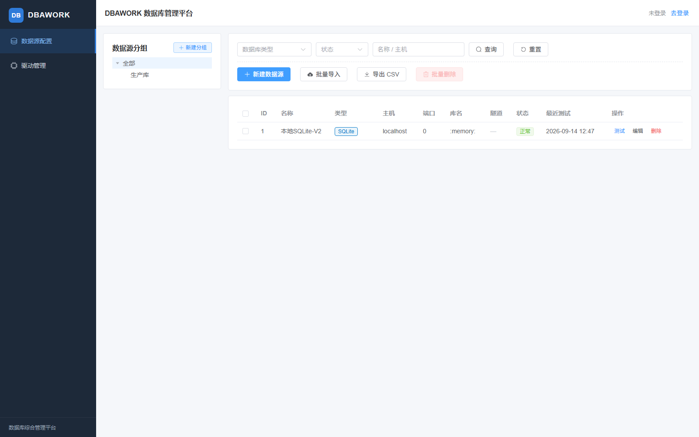
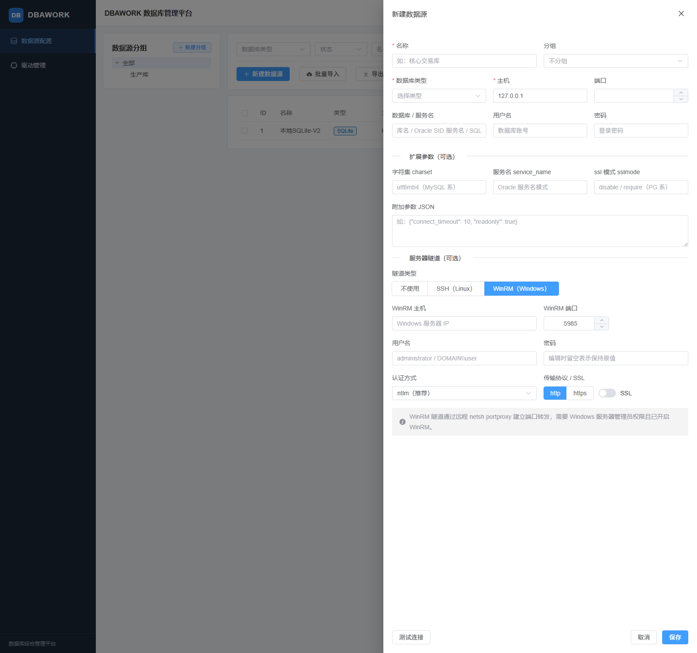
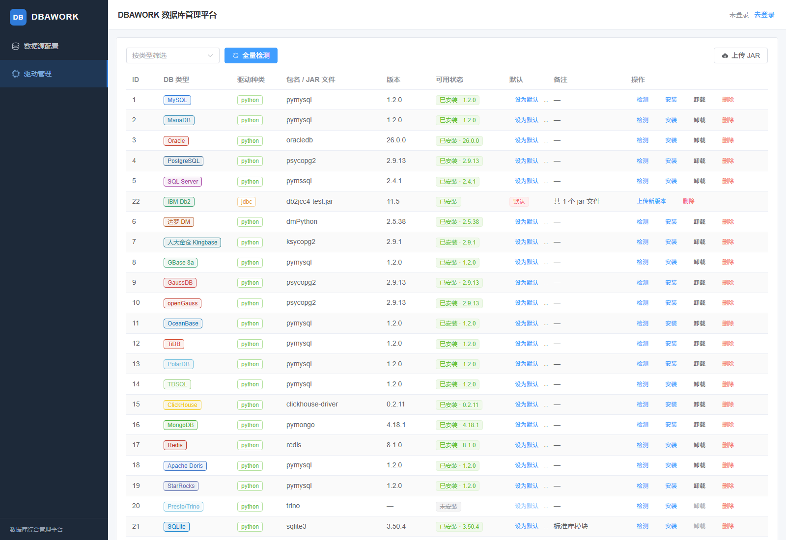

01交付内容
本次交付为一个可运行、可继续迭代的完整工程，仓库根目录 DBAWORK/，含三端源码、
gRPC 契约、数据库迁移、单元测试、Docker 编排与文档：
- go-backend/ — Go 网关（Gin + modernc SQLite）
datasources / groups / drivers / db-types CRUD · AES-GCM 凭据加密 · JWT 登录占位 - py-backend/ — Python 运行时（gRPC + FastAPI）
MySQL / Oracle / PostgreSQL / SQL Server / SQLite 适配器 · pip 驱动管理 · SSH / WinRM 隧道 - frontend/ — Vue 3 + Element Plus 前端
数据源配置页 · 驱动管理页 · 服务器隧道表单 · CSV 导入导出 · 登录占位
- proto/dbawork.proto — gRPC 契约（10 个 RPC）
ConnectionService × 2 · DriverService × 8 - data/ — 运行时数据目录
metadata.db · secret.key · drivers/（仅本机数据，不入库） - deploy/ · scripts/ · docs/ — docker compose、代码生成脚本、方案与细语文档
02系统架构与「测试连接」数据流
凭据以 AES-256-GCM 密文落库（主密钥首次启动生成于 data/secret.key）；
Go 调用 Python 前解密为明文，走内网 gRPC（按方案设计）。驱动「可用状态」由 Python 检测后回写 Go 侧
installed 字段。服务器隧道按 tunnel_type 切换：Linux 走 SSH 端口转发，Windows 走
WinRM + netsh portproxy。
03功能实现清单
| 模块 | 功能 | 状态 |
|---|---|---|
| 数据源管理 | 分组树（层级 / 增删改）、列表筛选（类型 / 状态 / 关键字）、新建 / 编辑 / 删除、单项与批量删除 | 已实现并验证 |
| 连接测试 | 已保存数据源测试（解密 → gRPC → 状态回写）、未保存前临时测试、结果含版本与耗时 | 已实现并验证 |
| 服务器隧道 | SSH（密码 / 私钥 / 私钥口令）与 WinRM（basic / ntlm / kerberos · http / https · SSL）子表单 | 已实现，待真实环境联调 |
| CSV 批量 | 批量导入（含分组自动创建、行级错误报告）、导出（不含密码） | 已实现并验证 |
| 驱动管理 | 全量 / 单类型检测、pip 安装卸载、JAR 上传与删除、设为默认（每类型唯一） | 已实现并验证 |
| 类型目录 | 内置 25 类（对标 DBCheck）、软隐藏 / 恢复、自定义类型新增 / 删除 | 已实现并验证 |
| 系统 | 健康检查、统一响应结构、JWT 登录占位（默认关闭）、CORS、64 MB 消息上限 | 已实现 |
04验证记录（实测输出）
| 验证项 | 命令 / 方式 | 结果 |
|---|---|---|
| Go 单元测试 | go test ./... | crypto · repository · service · csvimport 全部 ok |
| Python 单元测试 | pytest tests -q | 39 passed（2.84 s） |
| 端到端 · 测试连接 | POST /datasources/1/test | ok:true · db_version=3.50.4 · 状态回写「正常」 |
| 端到端 · 驱动检测 | POST /drivers/detect | 21 / 22 已就绪（仅 trino 未装，属可选；Oracle 采用官方 oracledb） |
| 端到端 · JAR 上传 | POST /drivers/jdbc（测试用 JAR） | 上传成功 · 落盘 drivers/db2/11.5/ · 自动设为默认 |
| 前端构建 | npm run build | 成功（vite · 1695 modules） |
| 界面验证 | headless 浏览器实测截图 | 见第 05 节（含点击「测试」后成功提示） |
05界面预览



06本地运行
# 1) Python 运行时（需完整版 Python 3.13；本机为 D:\Python\Python313） cd DBAWORK/py-backend python -m venv .venv .venv\Scripts\python.exe -m pip install -r requirements.txt .venv\Scripts\python.exe tools\gen_proto.py .venv\Scripts\python.exe -m rpc.server # gRPC :50051 .venv\Scripts\python.exe app.py # FastAPI :8000 # 2) Go 网关（数据目录默认 ../data） cd DBAWORK/go-backend go build -o bin/dbawork.exe ./cmd/dbawork .\bin\dbawork.exe # HTTP :8080 # 3) 前端（/api 代理到 :8080） cd DBAWORK/frontend npm install npm run dev # http://localhost:5173
容器化：cd deploy && docker compose up -d --build（前端 :8081 / Go :8080 / Python :50051+8000）。
全部环境变量与接口清单见项目根目录 README.md。
说明与边界：trino 为可选依赖未预装（可一键安装）；Oracle 驱动已升级为官方 python-oracledb（thin 模式免装 Oracle 客户端）；WinRM 隧道需要 Windows
服务器管理员权限并已开启 WinRM；JWT 鉴权默认关闭（
DBAWORK_AUTH_ENABLED=true 开启）；
其余国产库当前以别名路由到 MySQL / PG 协议栈，专有协议适配器保留扩展位。